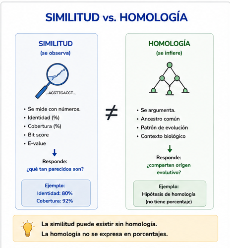
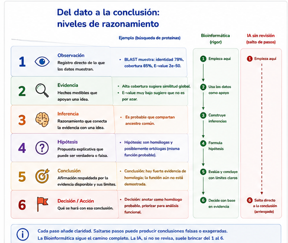
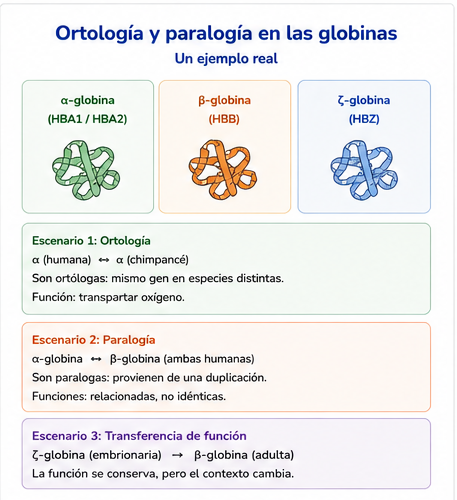
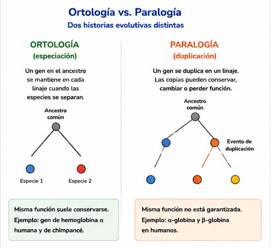
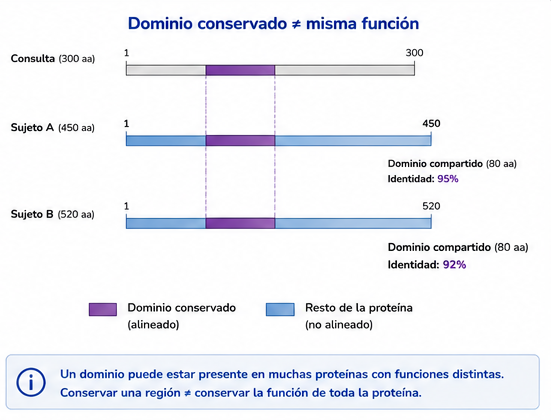
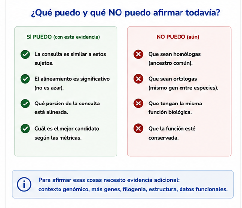

S33 — Inferir: cuando la similitud no basta
Antes de clase lees este módulo, empiezas Fitch (1970) o Koonin (2005) y haces un primer intento: separar observación de inferencia sobre un candidato de S32. Durante el taller trabajas las fronteras similitud/homología y función, y contrastas con las globinas. Después del taller entregas la sección de inferencia del protocolo y la bitácora de IA. El primer intento es formativo. El informe integrador de una secuencia desconocida es S34.
Ficha del módulo
| Elemento | Descripción |
|---|---|
| Unidad | 6 — Comparar secuencias para construir hipótesis biológicas (portada) |
| Sesión | S33 · 2 h |
| Competencias | F (principal); D, C, A, G (integradas) |
| Pregunta de la sesión | ¿Qué evidencia necesito para sostener una hipótesis de homología y cuáles son los límites de esa inferencia? |
| Datos | Ranking y métricas de S32 (ubiE); globinas α/β/ζ (ortología, paralogía, transferencia de función) |
| Herramientas | Ninguna nueva: BLAST y alineamientos ya hechos; Unix para recuperar metadatos |
| Lectura previa | Este módulo · Fitch (1970) o Koonin (2005) (consulta; ~45–60 min) |
| Producto | Sección Inferencia biológica del protocolo (hipótesis con alternativas y límites) |
| Cambio conceptual | Evidencia rankeada → hipótesis con alternativas, límites y evidencia faltante |
Relación con lo anterior
S32 te dejó con una jerarquía de candidatos y una prohibición explícita: todavía no podías decir «homólogo», «ortólogo» ni «misma función».
Hoy esa prohibición se levanta —con condiciones.
Tienes un hit excelente. Alta identidad, buena cobertura, E-value ridículamente bajo. La tentación es enorme. Y la pregunta cambia otra vez:
¿Puedo afirmar que ambas proteínas tienen el mismo origen evolutivo o la misma función?
SIMILITUD ≠ HOMOLOGÍA
(se observa) (se infiere)
HOMOLOGÍA ≠ MISMA FUNCIÓN
(ancestro común) (no está garantizada)Esas dos fronteras son el mensaje de la sesión. En S34 las usarás para integrar todo el arco en un informe sobre una secuencia desconocida.
IDEA CLAVE. Hasta ayer: tengo evidencia → elijo el mejor candidato. Hoy: tengo evidencia → construyo una hipótesis → reconozco qué no puedo afirmar todavía.
Resultados de aprendizaje
Al terminar S33 podrás:
- Distinguir similitud observada de homología inferida, y explicar por qué la segunda no tiene porcentaje.
- Separar, por escrito, observación, evidencia, inferencia, hipótesis y conclusión.
- Explicar ortología y paralogía como historias distintas (especiación frente a duplicación), usando un caso real —las globinas— sin construir un árbol.
- Reconocer cuándo un dominio compartido o una alta identidad no autorizan transferir función.
- Formular una hipótesis de homología o de función con alternativas, limitaciones y evidencia adicional necesaria.
- Evaluar críticamente una afirmación de IA que salte de un porcentaje a ortología y función.
Distinguir conceptos y declarar límites se alcanzan plenamente. Integrar todo en un informe defendible sobre una secuencia desconocida es el trabajo de S34.
Antes de empezar: lista de verificación
Guarda todo en results/s33/.
Ruta de la sesión
| Momento | Qué hacer | Tiempo estimado |
|---|---|---|
| Antes de clase | Leer §§1–5 · Fitch o Koonin · Práctica 1 | 50 + 50 + 40 min |
| Durante el taller | Prácticas 2–5 | 2 h |
| Después del taller | Sección de inferencia del protocolo · bitácora | 60 min |
Las secciones 1–6 y 8 son [Indispensable]. La sección 7 (xenología) es [Consulta]: otra historia posible, sin profundizar.
1. El salto que la tabla no da [Indispensable]
En S32 construiste evidencia. Eso responde preguntas del tipo:
- ¿Qué tan idéntico es el tramo?
- ¿Cuánto de mi proteína quedó cubierta?
- ¿Es sorprendente por azar en esta base?
Ninguna de esas preguntas es:
- ¿Comparten un ancestro?
- ¿Son el «mismo gen» en dos especies?
- ¿Hacen lo mismo?
Concepto esencial — la similitud se mide; la homología se argumenta. Dos secuencias son o no son homólogas: o descienden de un ancestro común, o no. No existe «un 80 % de homología». Existe un 80 % de identidad, que puede apoyar una hipótesis de homología —o no bastar—.

Figura 33.1. Principio 1 de la unidad: la homología no es un porcentaje.
La cadena que hay que no saltarse
observación → evidencia → inferencia → hipótesis → conclusión
(dato) (métricas (va más (propuesta (solo si la
+ contexto) allá) revisable) evidencia aguanta)| Peldaño | Ejemplo legítimo | Ejemplo ilegítimo |
|---|---|---|
| Observación | «pident = 86.6; cobertura ≈ 100 %» |
«Son ortólogos» |
| Evidencia | Esas métricas + misma familia anotada + base documentada | «El primer hit siempre es el ortólogo» |
| Inferencia | «El parecido es difícil de explicar solo por azar» | «Por lo tanto misma función» |
| Hipótesis | «Propongo homología; la explicación más simple es ortología, pero…» | «Queda demostrado» |
| Conclusión | Solo lo que sobrevive a alternativas y límites | Cualquier salto que omita el «pero» |

Figura 33.2. La Bioinformática habita los peldaños del medio. La IA suele brincar del primero al último.
2. Por qué aparece la palabra «homología» [Indispensable]
No la introducimos porque «tocaba el temario». Aparece porque sin ella no puedes ni formular bien la pregunta de hoy.
Concepto esencial — homología. Relación entre dos secuencias (o rasgos) que se explica por origen evolutivo común: descienden de un ancestro compartido. Es una hipótesis sobre el pasado, no una propiedad que el alineamiento imprima en una columna.
Pearson (2013) —que ya leíste— insiste en el mismo punto desde el título: se busca por similarity, y la palabra homology entre comillas avisa el abuso habitual.
Con tu ubiE de S31–S32, un hit de R. africae con identidad altísima y cobertura completa es evidencia fuerte a favor de homología. Todavía es una hipótesis: la base era pequeña, conocías la familia de antemano y no exploraste explicaciones alternativas con la misma dureza que exigirías en un caso abierto.
Afirmar homología no es «subir el tono» de un porcentaje. Es cambiar de tipo de afirmación: de lo medible a lo histórico.
Práctica 1 — Separar observación de inferencia (antes de clase, primer intento)
Antes de clase.
Toma un candidato de tu ranking de S32 y llena esta tabla antes de leer las secciones 3–4 si puedes:
| Tipo | Tu texto |
|---|---|
Observación (solo lo que está en el .tsv o el alineamiento) |
|
| Evidencia (métricas + contexto de la base/anotación) | |
| Inferencia (lo que crees que significan) | |
| Hipótesis (una frase revisable) | |
| Lo que no afirmas todavía |
Entrega. La tabla. No la reescribas hasta el taller.
3. El contraejemplo que obliga a pensar en historias [Indispensable]
Supón que alguien te dice:
«Si dos proteínas son muy parecidas y están en el mismo organismo, seguro hacen lo mismo: son la misma cosa.»
Mira las globinas de la unidad —proteínas que transportan oxígeno, cortas, fáciles de comparar—.
| Comparación | Identidad aproximada (alineamiento global) | Misma especie | Misma cadena |
|---|---|---|---|
HBA1 humana (NP_000508) frente a HBA2 humana (NP_000549) |
100 % | sí | α y α (dos genes) |
α humana frente a α de ratón (NP_032244) |
~86.6 % | no | sí (α) |
α humana frente a ζ humana (NP_005323) |
~59.9 % | sí | no (α frente a ζ) |
| α humana frente a β de ratón | ~46 % | no | no |
Lee la tabla otra vez:
- 100 % de identidad no significa «el mismo gen». HBA1 y HBA2 son genes distintos que producen la misma proteína (duplicación reciente).
- α humana se parece más a α de ratón (~87 %) que a ζ humana (~60 %). La similitud sigue la historia del gen, no la frontera de la especie.
- Si transfieres función solo porque «está en humano y se parece», puedes equivocarte: α y ζ son parecidas y no intercambiables en su biología.
Ahí nace la pregunta que define ortólogos y parálogos —no al revés—.

Figura 33.3. El dato que desmonta la intuición «mismo organismo ⇒ misma historia».
Práctica 2 — Globinas: la similitud no sigue la especie (durante el taller)
Durante el taller.
Inspecciona encabezados y longitudes:
grep '^>' data/source/globinas/*.fasta | head -20Contrasta (puedes usar Clustal Omega sobre pares, o las identidades reportadas en la sección 3 si el tiempo aprieta —en ese caso verifica al menos un par tú):
- α humana (
NP_000508) frente a α de ratón (NP_032244); - α humana frente a ζ humana (
NP_005323); - α humana frente a HBA2 (
NP_000549).
- α humana (
Interpreta. En un párrafo: ¿qué comparación apoya mejor una hipótesis de ortología? ¿Cuál sugiere paralogía? ¿Qué problema crea HBA1 = HBA2 para alguien que cree que «100 % = mismo gen»?
Documenta en el protocolo: «La similitud siguió la historia del gen, no la especie, porque…».
Entrega. El párrafo y, si los generaste, los archivos de alineamiento en results/s33/globinas/.
4. Dos historias detrás de un parecido [Indispensable]
Cuando dos genes se parecen, suele haber (al menos) dos relatos posibles:
Especiación → ortólogos
Un gen ancestral existía en una especie. La especie se divide en dos. Cada linaje hereda su copia del mismo gen. Esas copias son ortólogas: se separaron porque se separaron las especies.
Duplicación → parálogos
Dentro de un genoma, un gen se copia. Las dos copias empiezan iguales y pueden divergir de función con el tiempo. Son parálogas: se separaron por duplicación, no por especiación.

Figura 33.4. Ortología y paralogía no son etiquetas de porcentaje: son respuestas distintas a «¿cómo se separaron?».
| Ortólogos | Parálogos | |
|---|---|---|
| Evento que los separó | Especiación | Duplicación génica |
| Dónde suelen estar | Especies distintas | A menudo la misma especie (también entre especies, vía herencia) |
| Expectativa de función | Con frecuencia similar (no garantizada) | Con frecuencia divergente |
| Ejemplo en tus datos | α humana ↔︎ α de ratón | α humana ↔︎ ζ humana; HBA1 ↔︎ HBA2 |
Concepto esencial — por qué importa para transferir anotación. Si tu mejor hit es un parálogo con función distinta, copiarle la anotación a tu proteína es exactamente el error que esta sesión existe para prevenir. Si es un ortólogo bien soportado, la transferencia es más defendible… y sigue siendo una hipótesis, no un certificado.
Con un solo BLAST no «demuestras» ortología. En la práctica se usan criterios adicionales (mejor hit recíproco, sintenia, filogenia…). Hoy aprendes a nombrar la hipótesis y dudar en voz alta; los métodos finos son de cursos posteriores.
Práctica 3 — Ortología frente a paralogía como historias (durante el taller)
Durante el taller.
- Dibuja (a mano o en Markdown) los dos paneles de la figura 33.4 aplicados a tu caso: un escenario en el que tu hit favorito sería ortólogo y otro en el que sería parálogo.
- Para cada escenario escribe: qué evidencia tienes, qué evidencia falta, y qué harías experimental o computacionalmente después (sin inventar métodos que no conoces: basta con «buscar el mejor hit recíproco», «revisar anotación», «mirar cobertura otra vez»).
- Elige cuál escenario te parece más simple hoy y por qué. Si no puedes decidir, eso también es un resultado —escríbelo.
Entrega. Los dos escenarios y la decisión (o la no decisión) argumentada.
5. Cuando el parecido es solo un pedazo [Indispensable]
S32 ya te mostró la cobertura parcial. Aquí cobra nombre evolutivo:
Concepto esencial — dominio compartido. Dos proteínas pueden compartir un módulo (dominio) heredado o reclutado, y diferir en el resto. El HSP excelente describe el módulo, no necesariamente la proteína entera ni su función global.
Eso conecta tres cosas que ya viste:
- BLAST es local (S30–S31);
- cobertura baja engaña si solo miras identidad (S32);
- homología de un dominio no autoriza automáticamente transferir la función de toda la proteína (hoy).
6. Homología no garantiza la misma función [Indispensable]
Segunda frontera:
HOMOLOGÍA ≠ MISMA FUNCIÓNRazones frecuentes —sin convertirlas en una lista para memorizar—:
- parálogos que se especializaron;
- dominio catalítico compartido con contextos distintos;
- anotación del hit errónea o genérica («domain-containing protein»);
- tu pregunta biológica exige un ensayo que la secuencia sola no reemplaza.

Figura 33.5. Principio 2 de la unidad: la similitud no demuestra la misma función.
Qué puedes afirmar / qué no
| Con la evidencia típica de S31–S33 puedes… | No puedes… |
|---|---|
| Proponer homología como hipótesis | Tratarla como hecho medido por BLAST |
| Argumentar por qué ortología parece más simple que paralogía (o al revés) | «Demostrar» ortología sin más datos |
| Decir qué función sugerirías como punto de partida experimental | Garantizar la función en vivo |
| Listar qué evidencia adicional resolvería la duda | Cerrar el caso porque el E-value era bajo |

Figura 33.6. Principio 6: una hipótesis declara sus límites.
Práctica 4 — ¿Se puede transferir la función? (durante el taller)
Durante el taller.
Elige un hit de tu lista (o una globina) y escribe dos párrafos:
- A favor de usar su anotación como hipótesis de trabajo.
- En contra (paralogía, dominio parcial, anotación débil, base sesgada…).
Cierra con una frase en este molde:
«Transferiría la función como hipótesis provisional / no la transferiría todavía, porque…»
Comprueba que tu frase no diga «está demostrado».
Entrega. Los dos párrafos y la frase final.
7. Otra historia posible: transferencia horizontal [Consulta]
A veces un gen se parece mucho al de otro linaje porque viajó (transferencia horizontal), no solo por especiación o duplicación clásica. Esas copias se llaman a veces xenólogas.
Para esta unidad basta con saber que existe una tercera familia de relatos. No vamos a diagnosticarla: diagnosticarla exige más que un BLAST. Si en tu informe aparece un hit «demasiado parecido» en un taxón inesperado, la respuesta correcta no es forzar ortología: es anotar la rareza y pedir evidencia adicional.
Práctica 5 — La IA salta peldaños (taller y entrega posterior)
Durante el taller (discusión) y después (entrega).
Una IA responde:
«Estas proteínas tienen 92 % de identidad, por lo tanto son ortólogas y realizan exactamente la misma función.»
- Parte la frase en la tabla observación / inferencia / injustificado (como en S32).
- Reescribe una versión defendible en como máximo cuatro frases, usando el vocabulario de hoy.
- Registra en
doc/bitacora-ia.md.
El veneno sigue estando en «por lo tanto» y en «exactamente».
Entrega. La tabla, la reescritura y la entrada de bitácora.
8. Lo que hoy ya puedes llevar a S34 [Indispensable]
Al terminar esta sesión tienes el vocabulario y el criterio que faltaban para el cierre de la unidad:
| Llevas a S34 | Todavía no es S34 |
|---|---|
| Distinguir similitud de homología | El informe completo de una secuencia desconocida |
| Nombrar ortología/paralogía como historias | Integrar S30–S33 en un solo documento defendible |
| Decidir con argumentos si transferirías función | La evidencia integradora calificada como cierre |
Hoy levantamos la prohibición del vocabulario evolutivo con condiciones. En S34 no aprenderás conceptos nuevos: integrarás lo que ya sabes sobre una pregunta completa.
Práctica 6 — Anticipar la integración (puente a S34) (cierre del taller)
Durante los últimos minutos del taller.
Completa en una página:
Para mi candidato de S32 / mi caso ubiE:
Observé: …
Infiero (con límites): …
En S34, si me dan una secuencia desconocida, el primer riesgo que debo evitar es: …Eso no es el informe final: es el criterio que llevarás a S34.
Entrega. La página, junto con la sección del protocolo.
La sección del protocolo
Añade a doc/protocolo.md —sin borrar nada—:
## Unidad 6 · S33 — Inferencia biológica
### Pregunta biológica
[La pregunta que conecta S30–S33; en S34 se aplicará a la secuencia desconocida]
### Evidencia considerada
| Fuente (S30/S31/S32) | Qué aporta |
|---|---|
### Interpretación
[Cómo leíste identidad, cobertura y significancia juntas — remite a S32 sin repetir la teoría]
### Hipótesis propuestas
1. [Homología / ortología / paralogía / función — con alcance]
2. […]
### Hipótesis descartadas (o pospuestas)
| Hipótesis | Por qué cae o queda en espera |
|---|---|
### Justificación
[Párrafo: por qué la hipótesis preferida es la más simple *hoy*]
### Limitaciones
[Base, cobertura, anotación, ausencia de filogenia formal, etc.]
### Evidencia faltante
[Qué dato o experimento resolvería la duda]
### Conclusión provisional
[Una o dos frases. Sin «demostrado».]
### Uso de IA
[Qué propuso, qué validaste, qué rechazaste]Evidencia de la sesión
| Archivo | Contenido |
|---|---|
results/s33/ |
Alineamientos de globinas, notas, escenarios ortólogo/parálogo |
doc/protocolo.md |
Sección Inferencia biológica |
doc/bitacora-ia.md |
Práctica 5 |
| Primer intento | Práctica 1 |
Errores frecuentes y estrategias de diagnóstico
| Error | Por qué ocurre | Cómo se corrige |
|---|---|---|
| Decir «90 % de homología» | Se usa como sinónimo elegante de identidad | Homología no tiene porcentaje |
Saltar de pident a ortología |
La IA y muchos tutoriales lo hacen | Ortología es una historia; exige más que un número |
| Transferir función por el primer hit | Es rápido | Revisa cobertura, paralogía y calidad de la anotación |
| Tratar HBA1/HBA2 como «el mismo gen» | La secuencia es idéntica | Mismo producto ≠ mismo gen |
| Afirmar que α y ζ «hacen lo mismo» | Están en el mismo organismo y se parecen | Parálogos pueden divergir |
| Inventar un árbol filogenético | Para «se vea profesional» | Fuera de alcance; declara que no lo tienes |
| Creer que hoy cierra el curso | Había cuatro sesiones fusionadas | El cierre integrador es S34 |
Rúbricas
Primer intento (Práctica 1) — formativo
| Nivel | Descriptor |
|---|---|
| Logrado | La tabla separa observación de inferencia y declara explícitamente qué no afirma |
| Parcialmente logrado | Hay tabla, pero mezcla observación e hipótesis en la misma frase |
| Aún no logrado | No entregó primer intento, o solo pegó el .tsv |
Participación en el taller — formativo
| Nivel | Descriptor |
|---|---|
| Logrado | Explicó en voz alta ortología/paralogía con el caso de las globinas y señaló un límite al transferir función |
| Parcialmente logrado | Participó con definiciones de memoria sin conectar con los números |
| Aún no logrado | No participó |
Tarea 1 — Inferencia con globinas y transferencia (Prácticas 2–4)
| Nivel | Descriptor |
|---|---|
| Logrado | Usa el patrón α–α frente a α–ζ para explicar ortología/paralogía; la decisión de transferir función declara incertidumbre; no usa «% de homología» |
| Parcialmente logrado | Define ortólogo/parálogo de memoria sin conectar con los números del caso |
| Aún no logrado | Concluye función idéntica solo por identidad alta |
Tarea 2 — Crítica de IA y protocolo (Prácticas 5–6)
| Nivel | Descriptor |
|---|---|
| Logrado | La reescritura de la IA elimina el «por lo tanto» injustificado; el protocolo de inferencia tiene hipótesis, alternativas, límites y evidencia faltante; el puente a S34 nombra un riesgo concreto |
| Parcialmente logrado | Critica la IA sin separar peldaños, o el protocolo omite alternativas |
| Aún no logrado | Afirma ortología demostrada o no entrega la sección del protocolo |
Autoevaluación
- ¿Puedo explicar por qué no existe «un 80 % de homología»?
- ¿Puedo contar, con las globinas, por qué la similitud no sigue la especie?
- ¿Puedo definir ortólogo y parálogo como historias, no como umbrales?
- ¿Puedo decir cuándo no transferiría una función?
- ¿Mi protocolo declara explícitamente qué no puede afirmarse?
Semáforo de salida:
- 🟢 Puedo formular una hipótesis de homología con alternativas y límites.
- 🟡 Entiendo las definiciones, pero aún salto de la tabla a la conclusión.
- 🔴 Sigo diciendo «porcentaje de homología» o transfiero función sin mirar cobertura/paralogía.
Cierre con IA: clásico frente a asistido
Ya escribiste a mano la hipótesis del protocolo.
- Pídele a una IA que, con tu tabla de candidatos, redacte la «hipótesis de homología».
- Subraya en su texto cada verbo que implique certeza (
son,demuestra,exactamente). - Contrasta con tu versión. ¿Declaró paralogía como alternativa? ¿Pidió evidencia adicional?
- Anota en la bitácora: la IA propone; mis datos delimitan; yo argumento.
Anexo A. Correspondencia resultado–actividad–evidencia–criterio
| RA | Actividad | Evidencia | Criterio | Momento | Nivel en S33 |
|---|---|---|---|---|---|
| Distinguir similitud de homología | §§1–2, Práctica 1 | Tabla observación/inferencia | No usa «% de homología» | Antes / taller | Comprensión |
| Explicar ortología/paralogía | §§3–4, Prácticas 2–3 | Párrafo + escenarios | Historias, no umbrales; usa globinas | Taller | Comprensión |
| Límites de transferencia de función | §6, Práctica 4 | Frase provisional | Declara incertidumbre | Taller | Ejecución |
| Formular hipótesis con límites | Protocolo | Sección de inferencia | Alternativas + evidencia faltante | Después | Ejecución |
| Criticar IA | Práctica 5 | Bitácora | Elimina el salto a ortología/función | Después | Ejecución |
| Anticipar la integración | Práctica 6 | Página de puente | Nombra un riesgo para S34 | Taller | Diseño anticipado |
Anexo B. Alineación transversal
| Dimensión | Cómo se trabaja en S33 |
|---|---|
| Reproducibilidad | La sección de inferencia remite a archivos de S30–S32 |
| Verificación | Se contrastan identidades de globinas con archivos reales; HBA1/HBA2 se comprueba por igualdad de secuencia |
| Validación | El primer intento (Práctica 1) es línea base frente a la corrección posterior |
| Robustez | Se exigen alternativas (paralogía, dominio, anotación débil) antes de preferir una hipótesis |
Glosario
| Español | Inglés | Qué es |
|---|---|---|
| Conclusión provisional | Provisional conclusion | Afirmación acotada a la evidencia disponible |
| Dominio compartido | Shared domain | Módulo de la proteína que explica un HSP parcial |
| Duplicación génica | Gene duplication | Origen de parálogos |
| Especiación | Speciation | Origen típico de ortólogos |
| Homología | Homology | Origen evolutivo común (hipótesis, no porcentaje) |
| Inferencia | Inference | Paso más allá de lo directamente observado |
| Ortólogos | Orthologs | Homólogos separados por especiación |
| Parálogos | Paralogs | Homólogos separados por duplicación |
| Transferencia de función | Function transfer / annotation transfer | Usar la función de un hit como hipótesis para la consulta |
| Transferencia horizontal | Horizontal gene transfer | Movimiento de genes entre linajes; puede originar xenólogos |
| Xenólogos | Xenologs | Homólogos relacionados vía transferencia horizontal |
Distribución estimada de las dos horas
| Tiempo | Actividad |
|---|---|
| 0:00–0:10 | Qué dejó abierto S32. Las dos fronteras en el pizarrón |
| 0:10–0:25 | Similitud ≠ homología. Figuras 33.1 y 33.2. Puesta en común de la Práctica 1 |
| 0:25–0:50 | Globinas. Práctica 2. Figura 33.3 |
| 0:50–1:10 | Especiación / duplicación. Práctica 3. Figura 33.4 |
| 1:10–1:25 | Transferencia de función. Práctica 4. Figuras 33.5 y 33.6 |
| 1:25–1:40 | Práctica 5 — la frase de la IA |
| 1:40–1:55 | Práctica 6 — puente a S34 |
| 1:55–2:00 | Semáforo. Próxima: integrar todo sobre una secuencia desconocida |
Lo que todavía falta
Hoy aprendiste a inferir con límites: similitud ≠ homología; homología ≠ misma función; ortología y paralogía son historias distintas.
Todavía falta el último movimiento de la unidad —el mismo patrón que cerró U4 y U5—:
¿Cómo integro comparar, buscar, interpretar e inferir en una sola investigación defendible sobre una secuencia cuya identidad no me dieron de antemano?
No hay conceptos nuevos ahí. Hay que demostrar que puedes usar todos los anteriores juntos. Ese es el trabajo de S34.
comparar → buscar → interpretar → inferir → integrarReferencias
- Fitch, W. M. (1970). Distinguishing homologous from analogous proteins. Systematic Zoology, 19(2), 99–113. https://doi.org/10.2307/2412448 — lectura de consulta recomendada para esta sesión
- Koonin, E. V. (2005). Orthologs, paralogs, and evolutionary genomics. Annual Review of Genetics, 39, 309–338. https://doi.org/10.1146/annurev.genet.39.073003.114725 — lectura de consulta recomendada para esta sesión
- Pearson, W. R. (2013). An introduction to sequence similarity («homology») searching. Current Protocols in Bioinformatics, 42, 3.1.1–3.1.8. https://doi.org/10.1002/0471250953.bi0301s42
- Altschul, S. F., Gish, W., Miller, W., Myers, E. W., & Lipman, D. J. (1990). Basic local alignment search tool. Journal of Molecular Biology, 215(3), 403–410. https://doi.org/10.1016/S0022-2836(05)80360-2